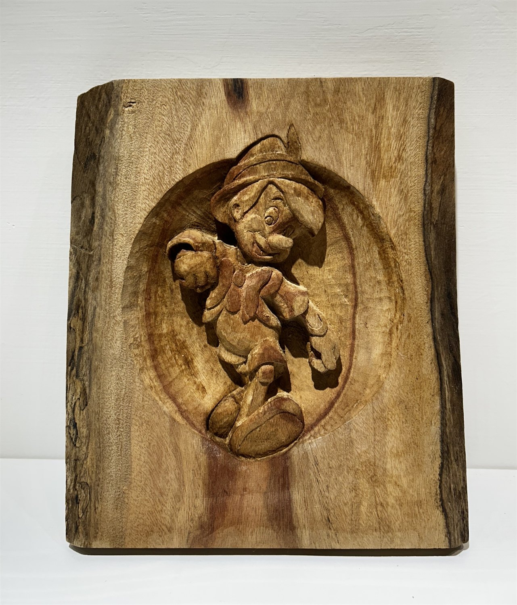
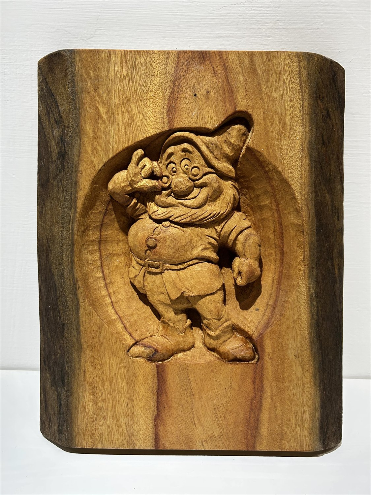
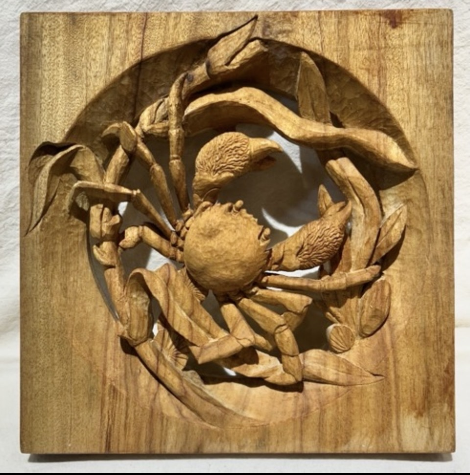
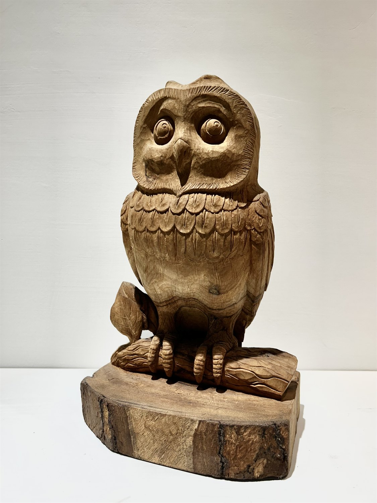
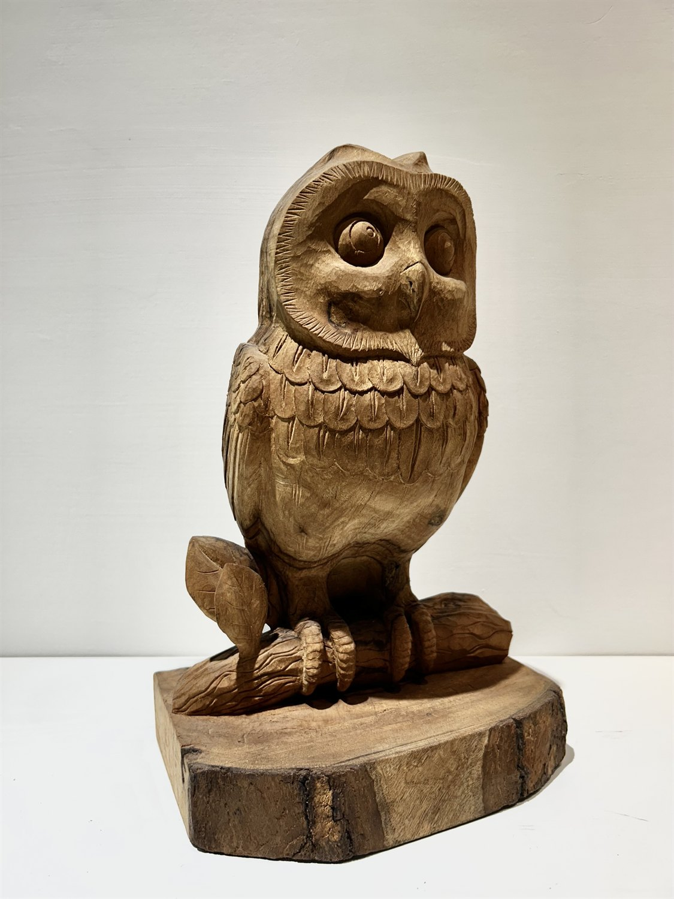

04.3 / 早期創作 Early Works
木之始 Wood Origin
木紋、刀痕與自然形體，是生命宇宙更早顯現的起點。 Wood grain, carved marks, and natural forms as early origins of life.
木之始 Wood Origin
木紋中的角色與書頁 Figures and Pages in Wood Grain
木材的紋理、板片與可翻閱的結構，使早期角色不只被畫出，也開始具有重量、關係和可以被打開的內部空間。 Wood grain, panels, and book-like structures allow early figures not only to be drawn, but to gain weight, relation, and an inner space that can be opened.
國王與皇后 King and Queen

三姊妹 Three Sisters

入形之時 Entering Form

現身者 Appearing One

蟹之旋 Spiral of the Crab

守望者 Guardian


被視之書：關於我 Book of Being Seen: About Me


木之始讓木材的重量、紋理與人物寓言成為早期創作的一條支線，也讓「觀看自己」第一次具有書頁與物件的形式。 Wood Origin makes the weight, texture, and figure-fables of wood an early branch of the practice, giving self-viewing the form of pages and objects for the first time.
這裡的木板像一種安靜的前史，將後來的浮雕、容器與人格結構提前埋入材料之中。 The wood panels here are a quiet prehistory, burying later reliefs, vessels, and persona structures within the material in advance.